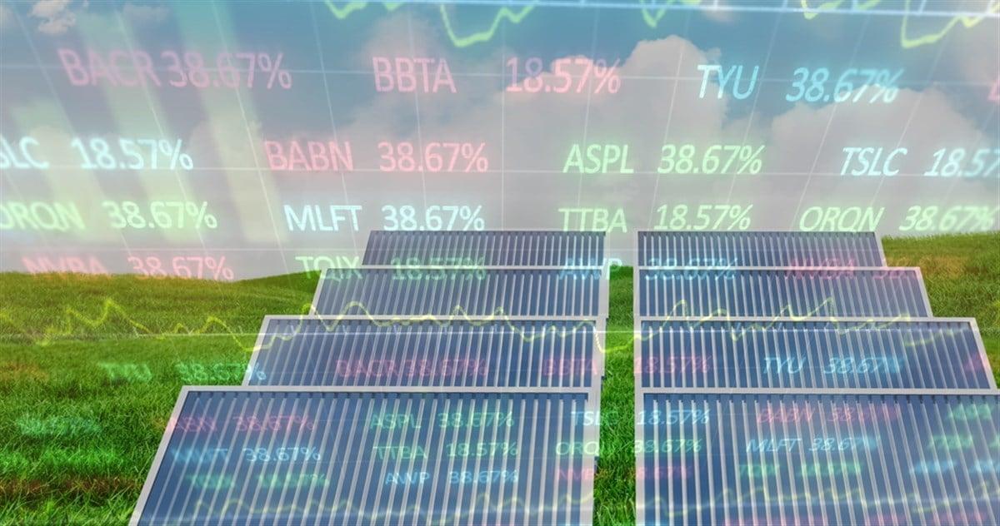

In my previous data stories, I've demonstrated the forecasting potential of ARIMA models - particularly at identifying short-term stock price movements. However, this has only been demonstrated for individual stocks and specific use-cases which do not apply to the average investor. Therefore, to build on my previous work, I wanted to expand ARIMA forecasting to multiple stocks in a portfolio. In this data story, I create a hypothetical solar stock portfolio balanced across 12 different solar stocks over a historical time window. Read on to find out more!
I created an initially balanced portfolio between all 12 solar stocks of interest. I have addressed some of these stocks in previous data stories, however, I will summarise the stocks and its company once more.
The general ARIMA equation:
= Differenced series value at time point t
= Coefficients for the past autoregression at specific time points.
= Past values of the differenced series at time points denoted by p
= Coefficients for the past moving average error coefficients.
= Moving average error value at time points denoted by q.
c = Constant
The results above stem from a moving 50 day sample and a 80:20 training/testing split over this sample period for each stock. As evidenced above, the model did not forecast to a high degree of accuracy over the 5 day time period as I had hoped. There are a large number of predictions which were incorrect (either false positives or negatives) which could lead to the portfolio losing wealth / an opportunity to gain wealth. However, only 19% of these predictions actually would lead to the portfolio losing money via a false positive, therefore demonstrating it's potential but also need for refinement.
First, I created a dataframe loading script which I could call from my main pipeline. This would perform the necessary joins from my database. The scan function can be used to determine all tables in my duck db file - returning a list of table names. The fetch_and_join function is used to fetch each individual table, obtain the close price and date column, then merge with all other table names.
import duckdb as ddb
import pandas as pd
def scan(path, *args, **kwargs):
tablefilter = args[0]
connection = ddb.connect(path, read_only = True)
tables = connection.sql("SHOW ALL TABLES;").df()
tablels = list(tables['name'])
if tablefilter:
tablels = [t for t in tablels if t.startswith(tablefilter)]
connection.close()
return tablels
def fetch_and_join(path, tablels):
connection = ddb.connect(path, read_only = True)
dfls = []
overalldf = connection.sql(f"SELECT DATE, CLOSE {tablels[0]} FROM {tablels[0]}").df()
overalldf['date'] = pd.to_datetime(overalldf['date'])
for index, t in enumerate(tablels):
try:
if index > 0:
dfr = connection.sql(f"SELECT DATE, CLOSE {t} FROM {t}").df()
dfr['date'] = pd.to_datetime(dfr['date'])
dfr = dfr.dropna()
overalldf = overalldf.merge(dfr, on = "date", how = 'left')
except Exception as e:
print(e)
print(t)
connection.close()
return overalldf
import pandas as pd
def update(stocks, param, status):
for s in stocks:
if s['Stock'] == param:
s['Status'] = status
else:
continue
return stocks
def expected_adjustments(stocks, wealthdict):
activestocks = wealthdict.keys()
denom = sum(wealthdict.values())
cashinplay = 0
for s in stocks:
if s['Stock'] in activestocks and s['Stock'] != 'N/A':
cashinplay += s['Value']
for s in stocks:
if s['Stock'] in activestocks and s['Stock'] != 'N/A':
nom = wealthdict[s['Stock']]
newval = nom * cashinplay / denom
s['Value'] = newval
else:
continue
return stocks
def actual_adjustments(stocks, valchangedict):
activestocks = valchangedict.keys()
for s in stocks:
if s['Stock'] in activestocks and s['Stock'] != 'N/A':
val = s['Value']
stockwealthchange = valchangedict[s['Stock']]
finalval = val * stockwealthchange
s['Value'] = finalval
else:
continue
return stocks
I used my Github green stock data engine (which can be found here), to generate all datasets used in this project, aiming to ensure that the stocks shared on overlapping date range (4th August 2022 - 31st December 2025)
# path is where I saved my green stock database (see my github)
tables = scan(path, 'TICKER_')
combined_df = fetch_and_join(path, tables)
# Can increase for longer term effects.
days_sample = 50
pie = [{'Stock': t, 'Value': 100, 'Status': 'VALID'} for t in tables]
staticpie = [{'Stock': t, 'Value': 100, 'Status': 'VALID'} for t in tables]
performance = {'FP': 0, 'FN': 0, 'TP': 0, 'TN': 0}
for d in range(0, days_sample):
# Iterator
if d % 5 == 0:
expected_wealth_changes = {}
actual_wealth_changes = {}
total = 0
statictotal = 0
for p in pie:
total += p['Value']
for sp in staticpie:
statictotal += sp['Value']
for t in tables:
arimaobj = arimaforecaster(combined_df[d:d+50], 'date', t, pie)
data, pie = arimaobj.dfprocessor()
if data.empty:
continue
else:
if data['ARIMA (upper bound)'].isnull().values.all() or data['ARIMA (lower bound)'].isnull().values.all():
pie = update(pie, t, 'INSUFFICIENT')
data = combined_df[d:d+50][t]
subset = list(pd.Series(data[39:45]).dropna(axis = 0))
cumprodsact = [(subset[index] / subset[index - 1 ]) for index, f in enumerate(subset)]
xa = 1
for ca in cumprodsact:
xa = xa * ca
actual_wealth_changes[t] = xa
else:
pie = update(pie, t, 'VALID')
subset = data[39:45]
estimationstatus = True
for s in subset['ARIMA (mean)'][1:5]:
if s < 0:
estimationstatus == False
if not estimationstatus:
pie = update(pie, t, 'INSUFFICIENT')
data = combined_df[d:d+50][t]
subset = list(pd.Series(data[39:45]).dropna(axis = 0))
cumprodsact = [(subset[index] / subset[index - 1 ]) for index, f in enumerate(subset)]
xa = 1
for ca in cumprodsact:
xa = xa * ca
actual_wealth_changes[t] = xa
else:
fivedayreturnsexp = [float(list(subset['historic (training)'])[0])] + [float(f) for f in subset['ARIMA (mean)'][1:5]]
fivedayreturnsact = [float(list(subset['historic (training)'])[0])] + [float(f) for f in pd.Series(subset['actual (test)'][1:5]).dropna(axis = 0)]
cumprodsexp = [((fivedayreturnsexp[index] / fivedayreturnsexp[index - 1])) for index, f in enumerate(fivedayreturnsexp) if index > 0 ]
cumprodsact = [((fivedayreturnsact[index] / fivedayreturnsact[index - 1])) for index, f in enumerate(fivedayreturnsact) if index > 0 ]
xe = 1
xa = 1
for cp in cumprodsexp:
xe = xe * cp
for ca in cumprodsact:
xa = xa * ca
if xe > 1 and xa >1:
performance['TP'] += 1
elif xe > 1 and xa < 1:
performance['FP'] += 1
elif xe < 1 and xa > 1:
performance['FN'] += 1
else:
performance['TN'] += 1
expected_wealth_changes[t] = xe
actual_wealth_changes[t] = xa
pie = expected_adjustments(pie, expected_wealth_changes)
pie = actual_adjustments(pie, actual_wealth_changes)
staticpie = actual_adjustments(staticpie, actual_wealth_changes)
The pipeline adjusted the allocation of each stock automatically before their actual wealth changes were factored in, leading to the line graph above. Gradually, most stocks rose in valuation. There was a sharp change in Shoals Technologies, where the pipeline correctly forecasted a decrease in valuation which was then compounded by its actual decrease in valuation. Overall, these results can best be visualised by comparing the forecast and rebalanced portfolio to a comparable solar portfolio focused without forecasting and rebalancing. This can be seen below.
Evidently, the ARIMA adjusted portfolio clearly yields consistently higher returns over the same time period - compared to an ordinary non-adjusted model. This may be because the ARIMA model rarely made false positive estimations (predicted an overall positive returns but resulting in a negative return). This means that when a stock did indeed decrease in value, most of the times, the portfolio reduced its weight to reduce its impact on the overall portfolio's wealth.
This method for maximising returns and minimising losses certainly demonstrates potential. To continue this study, I will have to increase the sample window beyond 50 days and factor in a more diversified assortment of solar stocks. Additionally, to further increase accuracy and increase risk management, I could begin to factor in volatility (variation / standard deviation) into my calculations. This may reduce exposure to stocks which leads to badly miscalculated bets (fortunately very rare in my use-case).
On a longer term time-scale, it would be helpful to factor in parsing of quarterly financial results to generate momentum terms which may potentially alter long-term price trajectories. Additionally, it would be helpful to make more well-founded and supported bets by utilising other types of statistical forecasting techniques to predict how wealth will change over time.
Full data has been obtained by alphavantage using my own custom GUI for climate stock data extraction - full source code can be obtained on github here